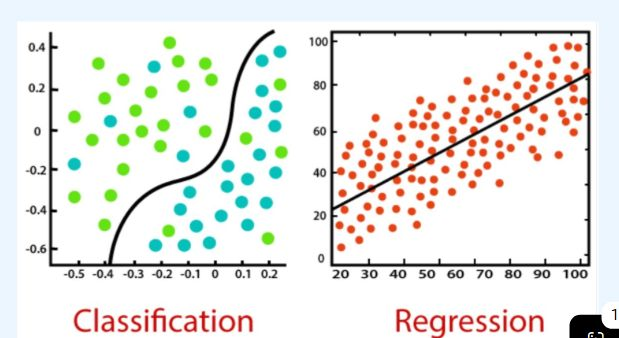
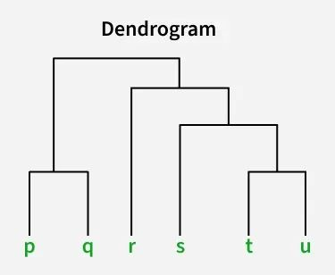
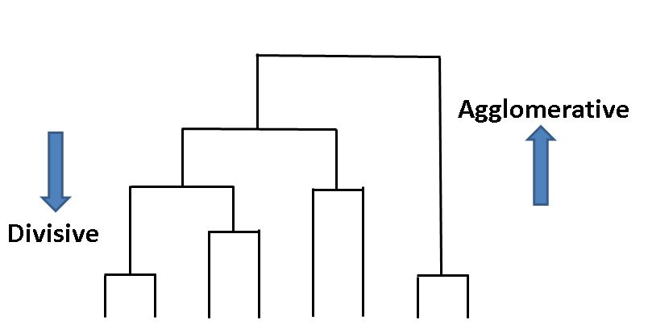
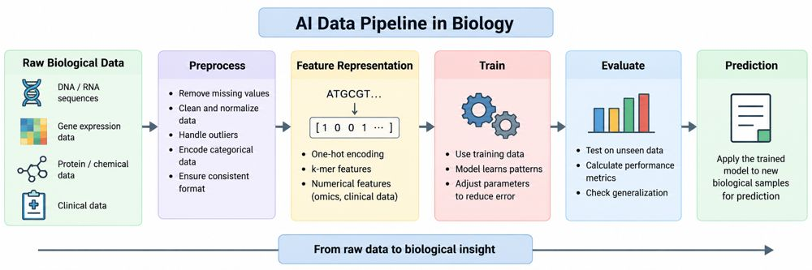

Learn the machine learning basics needed to work with biological data.
6 sessionsCLA-2
S1
Overview of AI for biological big data
2 marks
Artificial Intelligence (AI) refers to computer systems capable of performing tasks that involve learning, pattern recognition, prediction and decision-making.
4 to 5 marks
Write the definition, then any 4 or 5 of these points, one line each: Introduction to AI in Biology; Why Does Biology Need AI?; What is Biological Big Data?; AI, ML and Deep Learning; AI is used across multiple biological disciplines.
12 to 13 marks: answer in this order
Introduction to AI in Biology
Why Does Biology Need AI?
What is Biological Big Data?
AI, ML and Deep Learning
AI is used across multiple biological disciplines
Finish with a labelled diagram or table, one real example, one application and a one-line conclusion.
Practice questions
2 marks: Define biological big data.
5 marks: Differentiate AI, ML and deep learning.
12 marks: Explain the role of AI in biological big data with examples.
Complete notes
Introduction to AI in Biology
Artificial Intelligence (AI) refers to computer systems capable of performing tasks that involve learning, pattern recognition, prediction and decision-making.
Biology is increasingly becoming a data-intensive science.
Examples of biological data include:
DNA and RNA sequences
Protein sequences and structures
Gene-expression data
Medical images
Clinical records
Molecular structures
AI provides computational methods to extract useful information from these large datasets.
Why Does Biology Need AI?
Modern biological experiments generate data at a scale that is difficult to analyse manually.
For example:
Genome sequencing → Millions/Billions of DNA bases
Gene-expression experiment → Thousands of genes
Medical imaging → Millions of pixels
Drug screening → Thousands/Millions of compounds
AI can help:
Process large datasets
Identify hidden patterns
Classify biological samples
Make predictions
Automate repetitive analysis
What is Biological Big Data?
Biological big data refers to large, complex and diverse datasets generated from biological and healthcare studies.
The data may differ in:
Volume – very large amounts of data
Variety – sequences, images, numbers, clinical records
Velocity – data may be generated continuously
Veracity – data may contain errors or uncertainty
Examples
Genome databases
Protein databases
Gene-expression datasets
Electronic health records
Medical imaging repositories
AI, ML and Deep Learning
These terms are related but not identical.
Artificial Intelligence
Broad field concerned with intelligent computational systems.
↓
Machine Learning
AI systems that learn patterns from data.
↓
Deep Learning
Machine learning based on multilayer neural networks.
Relationship
AI ⊃ Machine Learning ⊃ Deep Learning
Deep learning is therefore one approach within machine learning, and machine learning is one approach within AI.
AI is used across multiple biological disciplines.
Area
Example AI application
Genomics
Variant prediction
Proteomics
Protein-function prediction
Structural biology
Structure prediction
Drug discovery
Virtual screening
Medical imaging
Image classification
Systems biology
Network analysis
Healthcare
Risk prediction
S2
Supervised and unsupervised learning basics
2 marks
For biological applications, supervised and unsupervised learning are especially important.
4 to 5 marks
Write the definition, then any 4 or 5 of these points, one line each: What is Machine Learning?; MACHINE LEARNING FOUNDATIONS; Supervised Learning; Classification and Regression; What is Classification?; Multiclass classification.
12 to 13 marks: answer in this order
What is Machine Learning?
MACHINE LEARNING FOUNDATIONS
Supervised Learning
Classification and Regression
What is Classification?
Multiclass classification
Common Classification Algorithms
What is Regression?
Suppose we want to predict a person's blood glucose level
Classification vs Regression
Unsupervised Learning
Applications
Clustering in Biology
Basic Idea of Clustering
Finish with a labelled diagram or table, one real example, one application and a one-line conclusion.
Practice questions
2 marks: Define supervised learning.
5 marks: Differentiate classification and regression.
12 marks: Explain supervised and unsupervised learning, with k-means and hierarchical clustering.
Complete notes
What is Machine Learning?
Machine Learning (ML) allows a computer to learn patterns from data rather than requiring every rule to be explicitly programmed.
Traditional programming:
Rules + Data → Output
Machine learning:
Data + Known examples → Learning algorithm → Model
Then:
New data → Trained model → Prediction
This makes ML particularly useful for biological systems where the underlying relationships can be extremely complex.
MACHINE LEARNING FOUNDATIONS
Major machine-learning approaches include:
Supervised Learning
Learns from labelled examples.
Unsupervised Learning
Discovers patterns in unlabelled data.
Reinforcement Learning
Learns actions through rewards and penalties.
For biological applications, supervised and unsupervised learning are especially important.
Supervised Learning
Input
Label
Gene expression
Cancer
Gene expression
Normal
Gene expression
Cancer
Gene expression
Normal
Supervised learning uses labelled training data.
Example:
The model learns the relationship between the input features and known labels.
It can then classify a new sample.
Applications
Disease classification
Protein-function prediction
Drug activity prediction
Medical image classification
Classification and Regression
Two common supervised-learning tasks are:
Classification
Predicts a category.
Examples:
Tumour → Benign / Malignant
Patient → High risk / Low risk
Regression
Predicts a numerical value.
Examples:
Predicting drug activity
Predicting protein expression
Predicting disease-risk score
What is Classification?
Classification is a supervised learning problem in which the model predicts which predefined category an input belongs to.
The training data contain inputs + known class labels.
Binary classification
Only two possible categories.
Examples:
Cancer / Normal
Diseased / Healthy
Toxic / Non-toxic
Active / Inactive
Multiclass classification
More than two categories.
For example, classifying a cell into:
Neuron / Muscle cell / Liver cell / Immune cell-The model selects one of the predefined classes.
Multilabel classification-An observation can belong to multiple categories simultaneously.
For example, a protein could be associated with:
DNA binding + Nuclear localization + Enzyme activity
Common Classification Algorithms
Some commonly used algorithms are:
Logistic Regression
Decision Trees
Random Forest
Support Vector Machines (SVM)
k-Nearest Neighbours (k-NN)
Neural Networks
Deep-learning models
What is Regression?
Regression is a supervised learning problem in which the model predicts a continuous numerical value.
Instead of asking:
"Which category does this sample belong to?"
we ask:
"What numerical value should be predicted?“
Suppose we want to predict a person's blood glucose level.
We give the model information such as:
Age
Weight
Previous glucose level
Activity level
The model may predict:
Blood glucose = 125 mg/dL
The answer is a number, so this is regression.
Classification vs Regression
Feature
Classification
Regression
Output
Category
Numerical value
Type
Discrete
Continuous
Example
Cancer / Normal
Blood glucose = 125 mg/dL
Output example
Cancer
78.5
Common use
Diagnosis
Prediction of measurement

Unsupervised Learning
Unsupervised learning works with unlabelled data.
The algorithm attempts to discover natural patterns.
Example:
Gene-expression data
↓
Clustering
↓
Patient Group 1
Patient Group 2
Patient Group 3
The researcher may then investigate whether these groups correspond to different biological subtypes.
Applications
Patient clustering
Gene-expression analysis
Molecular subtype discovery
Biological pattern discovery
Clustering in Biology
Clustering groups similar data points together.
Suppose researchers have gene-expression data from 500 patients.
The algorithm may identify:
Cluster 1 → Similar expression pattern
Cluster 2 → Different expression pattern
Cluster 3 → Another expression pattern
Researchers can then investigate the biological significance of these groups.
Common approaches include:
K-means clustering
Hierarchical clustering
Basic Idea of Clustering
Gene B
|
90| ● P5
| ● P4 ● P6
|
|
20| ● P2
| ● P1 ● P3
|
+---------------------------- Gene A
The objective of clustering is to allow the computer to discover these groups automatically.
We can visually see two groups.
What Does "Similarity" Mean?
Clustering requires some way to measure how similar or different two observations are.
A common measure is distance.
Small distance → More similar
Large distance → Less similar
In biological datasets, the definition of similarity depends on the type of data.
What is K-Means Clustering?
K-Means is one of the simplest and most widely used clustering algorithms.
The K represents the number of clusters we want to create.
For example:
K = 2 → Two clusters
K = 3 → Three clusters
K = 5 → Five clusters
The algorithm attempts to divide the data into K groups such that points within the same group are relatively similar.
K-Means Algorithm – Basic Steps
Step 1 – Choose K
Decide how many clusters you want.
For example:
K = 2
Step 2 – Select Initial Centroids(average position of all the points belonging to that cluster.)
The algorithm initially chooses two points as cluster centres.
● = Data point
X = Initial centroid
● ●
X X
● ●
Step 3 – Assign Points to the Nearest Centroid
For every data point:
Calculate distance to each centroid
↓
Choose the closest centroid
↓
Assign the point to that cluster
For example:
Cluster 1 Cluster 2
● ● ● ● ● ●
● ●
Step 4 – Recalculate the Centroids
Once points have been assigned, calculate the new centre of each cluster.
The centroid moves toward the centre of the points.
Then:
Reassign points → Recalculate centroids →
This continues until the clusters become stable.
Advantages of K-Means
Simple
Easy to understand and implement.
Fast
Generally computationally efficient for large datasets.
Scalable
Can be applied to relatively large datasets.
Easy to visualize
Clusters can be plotted when the data have two or three dimensions.
Useful for exploration
Can help researchers discover previously unknown groups.
Limitations of K-Means
1. K must be chosen
The algorithm requires the number of clusters to be specified.
2. Sensitive to initialization
Different starting centroids can sometimes produce different results.
3. Sensitive to outliers
Extreme data points can influence the centroid.
4. Assumes certain cluster shapes
K-Means works particularly well when clusters are relatively compact and separated.
5. Scaling matters
Features measured on very different scales can dominate the distance calculation.
For biological data, normalization or appropriate scaling may therefore be important.
Hierarchical clustering
Hierarchical clustering is an unsupervised learning method that groups similar data points and creates a tree-like structure of clusters.
Unlike K-means, we do not need to specify the number of clusters at the beginning.
The result is represented as a dendrogram.
Basic process:
Start with each data point as a separate cluster.
Find the two most similar clusters.
Merge them into one cluster.
Continue merging until all points form one large cluster.
Cut the dendrogram at a chosen level to obtain the desired groups.

Two approaches
Agglomerative clustering
Starts with individual data points.
Gradually merges similar clusters.
Most commonly used.
Divisive clustering
Starts with one large cluster.
Gradually splits it into smaller clusters.
Biological applications
Grouping genes with similar expression
Clustering patients based on molecular profiles
Grouping similar species or organisms
Analysing patterns in omics datasets

Figure
Feature
Supervised
Unsupervised
Labels
Required
Not required
Goal
Prediction
Pattern discovery
Example
Cancer classification
Patient clustering
Output
Known categories/values
Groups/patterns
S3
Feature representations for sequences and omics
2 marks
Feature representation means converting biological data into a form that a machine-learning algorithm can understand and process.
4 to 5 marks
Write the definition, then any 4 or 5 of these points, one line each: Feature Representation; Representing DNA and RNA Sequences; B. k-mer representation; C. Representing Protein Sequences; What is Omics Data?.
12 to 13 marks: answer in this order
Feature Representation
Representing DNA and RNA Sequences
B. k-mer representation
C. Representing Protein Sequences
What is Omics Data?
Finish with a labelled diagram or table, one real example, one application and a one-line conclusion.
Practice questions
2 marks: What is one-hot encoding?
5 marks: Explain k-mer representation.
12 marks: Explain feature representation for DNA, RNA, proteins and omics data.
Complete notes
Feature Representation
Feature representation means converting biological data into a form that a machine-learning algorithm can understand and process.
Biological data such as DNA sequences, protein sequences, gene-expression values, or metabolomics data are usually not directly suitable as ML inputs. They must first be represented as numerical features.
Feature representation is the process of converting biological information into numerical form so that an AI or machine-learning algorithm can process it.
Representing DNA and RNA Sequences
A. One-hot encoding
Each nucleotide is represented using a binary vector.
For example:
ATGC becomes:
This representation does not assume that one nucleotide is numerically greater or smaller than another.
Applications:
DNA classification
Promoter prediction
Enhancer prediction
Variant analysis
RNA sequence analysis
Base
Representation
A
1 0 0 0
T
0 1 0 0
G
0 0 1 0
C
0 0 0 1
B. k-mer representation
A k-mer is a sequence of k consecutive nucleotides.
For example, for: ATGCGT
the 2-mers are:
AT, TG, GC, CG, GT
The algorithm can count how frequently different k-mers occur.
For DNA, if k = 2, there are:
4² = 16 possible 2-mers
Thus, a sequence can be represented by a vector containing the frequencies of its k-mers.
Applications:
Genome classification
Species identification
Promoter prediction
Regulatory sequence analysis
Microbial classification
C. Representing Protein Sequences
Protein sequences contain 20 standard amino acids.
Example:
MKTLLV...
Each amino acid can be represented using different features.
Simple representation
Each amino acid can be converted into numerical properties such as:
For example, a protein can be represented by the percentage of each amino acid.
This produces a 20-dimensional feature vector:
[A%, R%, N%, D%, C%, ..., Y%, V%]
This is called amino-acid composition.
What is Omics Data?
Omics refers to large-scale biological datasets that measure many biological molecules simultaneously.
The major challenge is that omics datasets can contain thousands or millions of features.
For example, a gene-expression dataset may contain:
Samples × Genes
500 patients × 20,000 genes
This means there are 20,000 potential features for each patient.
The ML model can use them to predict something such as:
Disease vs normal
Cancer subtype
Drug response
Patient outcome
S4
AI data pipeline: preprocess, train, evaluate
2 marks
Preprocessing is the process of cleaning and preparing raw biological data before using it for machine learning.
4 to 5 marks
Write the definition, then any 4 or 5 of these points, one line each: Data Pipeline – Overview; Data Preprocessing; Feature Representation and Data Splitting; Step 3 – Model Training; Step 4 – Model Evaluation; Step 5: Prediction.
12 to 13 marks: answer in this order
Data Pipeline – Overview
Data Preprocessing
Feature Representation and Data Splitting
Step 3 – Model Training
Step 4 – Model Evaluation
Step 5: Prediction
Finish with a labelled diagram or table, one real example, one application and a one-line conclusion.
Practice questions
2 marks: What is data preprocessing?
5 marks: Write the steps in an AI data pipeline.
12 marks: Explain the AI data pipeline with the diabetes-prediction example.
Complete notes
Data Pipeline – Overview
An AI model does not directly learn from raw biological data. The data must pass through a series of steps before the model can make reliable predictions.
Basic AI pipeline:
Preprocess: Clean and prepare the data.
Feature representation: Convert biological information into suitable numerical features.
Train: Use training data to learn patterns.
Evaluate: Test how well the trained model performs on unseen data.
Prediction: Apply the trained model to new biological samples.
The quality of each step affects the final performance of the AI model.
Raw Data →
Preprocess →
Feature Representation →
Train →
Evaluate →
Prediction
Data Preprocessing
Preprocessing is the process of cleaning and preparing raw biological data before using it for machine learning.
Biological datasets may contain:
Missing values
Duplicate observations
Measurement errors
Noise
Different scales between variables
Inconsistent formats
Common preprocessing steps include:
Removing or handling missing values
Removing duplicate or incorrect data
Normalizing or standardizing numerical values
Encoding categorical information
Checking for outliers
Ensuring that all samples are represented consistently
Feature Representation and Data Splitting
After preprocessing, biological information is converted into features that can be used by the AI model.
Examples:
DNA → k-mer frequencies or one-hot encoding
Protein → amino-acid features or embeddings
Gene expression → numerical expression values
Clinical data → age, laboratory values, treatment history, etc.
The dataset is then divided into different subsets:
Training set → Used to teach the model
Validation set → Used to tune and select the model
Test set → Used for final evaluation
A common approach is to use approximately 70–80% for training and the remaining data for validation/testing, although the exact proportions depend on the dataset and study design.
Step 3 – Model Training
During training, the AI model learns patterns from the training data.
The model receives:
Input features → Model → Prediction
The prediction is compared with the known answer, called the target or label.
The model calculates an error (loss) and adjusts its parameters to reduce this error.
This process is repeated many times until the model learns useful patterns.
Example:
Step 4 – Model Evaluation
After training, the model must be tested using unseen data.
This determines whether the model has learned general patterns rather than simply memorizing the training data.
For classification, commonly used measures include:
Accuracy – overall proportion of correct predictions
Precision – how many predicted positives were actually positive
Recall/Sensitivity – how many actual positives were correctly identified
Specificity – how many actual negatives were correctly identified
F1-score – balance between precision and recall
For regression, common measures include:
MAE – Mean Absolute Error
MSE – Mean Squared Error
RMSE – Root Mean Squared Error
R² – coefficient of determination
Step 5: Prediction
Once the AI model has been trained and evaluated, it can be used to make predictions on new, unseen biological data.
Example:
A model is trained using patient data where the disease status is already known.
New patient data → Trained AI model → Prediction
For example:
Clinical + genomic data → AI model → Disease: High Risk / Low Risk
Figure

S5
Applications in genomics and systems biology
2 marks
In genomics AI identifies genes and variants and analyses gene expression; in systems biology it models how many components of a cell interact.
4 to 5 marks
Write the definition, then any 4 or 5 of these points, one line each: AI in Genomics; AI for Gene and Variant Analysis; AI for Gene Expression Analysis; Systems Biology.
12 to 13 marks: answer in this order
AI in Genomics
AI for Gene and Variant Analysis
AI for Gene Expression Analysis
Systems Biology
Finish with a labelled diagram or table, one real example, one application and a one-line conclusion.
Practice questions
2 marks: Name two AI applications in genomics.
5 marks: Explain AI in gene expression analysis.
12 marks: Explain AI applications in genomics and systems biology.
Complete notes
AI in Genomics
Genomics is the study of an organism's complete DNA.
AI can analyse large genomic datasets and identify patterns that may be difficult to detect manually.
Applications:
Genome sequence analysis
Identification of genetic variants
Disease-associated mutation prediction
Gene function prediction
Genome classification
Prediction of regulatory regions
Example:
DNA sequence → AI model → Predict whether a genetic variant may be associated with disease
AI for Gene and Variant Analysis
A genome can contain millions of genetic variations between individuals.
AI can help identify which variations may be biologically important.
Workflow:
DNA sequence → Identify variants → AI analysis → Predict possible effect
For example, an AI model can analyse a mutation and predict whether it is likely to have:
Little or no effect
A possible functional effect
A potentially harmful effect
This can help researchers prioritize variants for further experimental investigation.
AI for Gene Expression Analysis
Gene expression tells us how actively genes are being expressed in a cell or tissue.
AI can analyse gene-expression data to identify patterns associated with different biological conditions.
Example:
Gene-expression data from:
Healthy cells + Cancer cells
↓
AI/ML analysis
↓
Identify genes or patterns associated with cancer
Applications include:
Disease classification
Cancer subtype identification
Prediction of treatment response
Systems Biology
Systems biology studies how different biological components work together as a system.
Instead of studying only one gene or protein, it considers interactions between:
Genes ↔ Proteins ↔ Metabolites ↔ Cells
AI can analyse these complex relationships and identify patterns within biological systems.
Examples include:
Gene regulatory networks
Protein–protein interaction networks
Cell signalling pathways
S6
Benefits and limitations of AI in biology
2 marks
AI in biology offers speed and pattern discovery, but it is limited by data bias, overfitting, poor explainability and the need for lab validation.
4 to 5 marks
Write the definition, then any 4 or 5 of these points, one line each: Benefits of AI in Biology; Limitations of AI in Biology; Overfitting; Common causes OF Overfitting.
12 to 13 marks: answer in this order
Benefits of AI in Biology
Limitations of AI in Biology
Overfitting
Common causes OF Overfitting
Finish with a labelled diagram or table, one real example, one application and a one-line conclusion.
Practice questions
2 marks: What is overfitting?
5 marks: List the benefits and limitations of AI in biology.
12 marks: Discuss the benefits, limitations and overfitting problem of AI in biology.
Complete notes
Benefits of AI in Biology
AI can process large amounts of biological data and identify patterns that may be difficult to detect manually.
Major benefits:
Handles large datasets – Can analyse genomic, clinical and molecular data at large scale.
Fast analysis – Performs computational analysis much faster than manual approaches.
Pattern recognition – Identifies relationships and patterns in complex biological data.
Automation – Automates repetitive analysis tasks.
Prediction – Can predict disease risk, drug properties, gene functions and other biological outcomes.
Personalization – Can support personalized medicine by analysing individual patient data.
Limitations of AI in Biology
AI models also have important limitations.
Data quality: Poor-quality data can produce poor predictions.
Limited training data: Some biological problems have relatively small datasets.
Bias: If the training data are biased, the model can produce biased results.
Overfitting: A model may perform well on training data but poorly on new data.
Generalization: A model trained using one population, laboratory or dataset may not work equally well in another.
Interpretability: Some complex AI models are difficult to understand.
Overfitting
Overfitting means the AI model learns the training data too well — including its noise and small details — instead of learning the general pattern.
So:
Training data → Very good performance New/unseen data → Poor performance
Simple example:
Suppose we train an AI to predict diabetes using patient data.
The model is given 1,000 previous patient records.
If it memorizes the specific patterns of those 1,000 patients rather than learning general relationships between age, weight, glucose level, etc., it may perform like this: